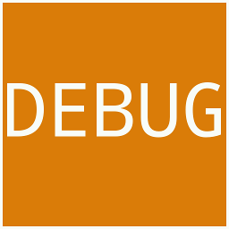

Lera3D
A portable cross-platform game engine and framework
Overview
- Written in "portable" ANSI C++
- Light-weight and modular architecture
- Platforms*: Linux, Mac OSX and Windows
- Dual licensed: GPLv3 and commercial**
- No, it won't build your game by itself !
* supported out of the box as of now, other platforms later
** negotiated on a case-to-case basis, currently unavailable
Architecture
- Say bye to
STLandBOOST - Say hi to custom containers and foundation classes
- Reference counting
- Smart pointers
Architecture
- Custom RTTI and dynamic factory system
- Each sub-system lives in a standalone "plugin"
- One interface, multiple* implementations
- Plug-and-play 3rd-party middleware integration**
- ... more
* i.e the Sound sub-system can have an OpenAL and a DirectSound implementation
** carefully selected based on a number of factors like dependencies and portability
Graphics Engine
Encompases and coordinates all the "low-level" non-game related sub-systems including scripting and physics.
Renderer
- OpenGL 2.0 based renderer
- Shader (GLSL) based material system
- Real-time per-pixel lighting and soft-shadows
Renderer
- Screen Space Ambient Occlusion and Post Processing
- Seemless in-door-outdoor scene transitions
- Octree based scene and terrain system
Other
- Sound via OpenAL
- Physics via Bullet
- Scripting via Python and Lua
- Event-driven flexible GUI via GWEN
- Networking*
* currently unavailable (planned)
Game Engine
Encompases and coordinates the "high-level" game development framework and its various sub-systems.
Game Scripting
- Powerful and flexible scripting system
- Support for all commonly used game objects such as actions, actors, behaviours, triggers and waypoints
- Dozens of default AI actions like hide, attack, defense and call for reinforcements
- Fully scriptable vechicles
- ... more
Tools of trade
If we don't have it, you don't want it.
Tools of trade
- Data-driven and import based
- Model viewer, material, particle and script editor
- Built-in in-game WYSIWYG editor
- Built with Unix philosophy* and KISS in mind
- ... more
* multiple tools, each doing exactly one thing
Raison d'être & philosophy
- Release early, release often
- No hidden costs, is "free software"
- Community driven
- Focus on quality vs number of features*
* this is where the vast major of FLOS "engines" fail and lose momentum
In the wild
We have our in-house episodic steam-punk third person action-adventure called Ancestria: Flux.
Ancestria: Flux *

* work in progress, does not reflect the quality of the final product